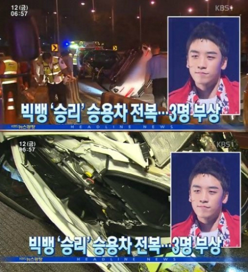
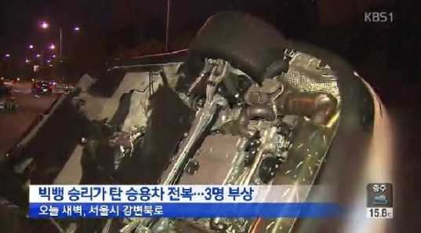
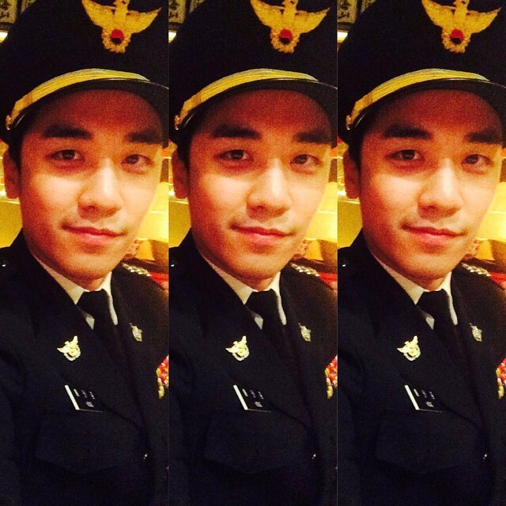

胜利车祸
胜利乘坐的车被私生饭撞了
2013年12月23日
详细资讯： KPOP CONCERTS - Soompi
胜利在上海参加完活动后正乘车前往下一站。他的车后面跟着工作人员的车，后面还有一名粉丝在跟着胜利。这位粉丝撞上了工作人员的车，结果工作人员的车从后面与胜利的车相撞
2013年12月24日
YG向eNews表示：昨天胜利在中国遭遇车祸。事发后，中国警方联系了我们，询问该如何处理。我们请求警方对这位粉丝宽大处理
胜利发Twitter回应：
昨晚发生的小事故，不是任何人的错。我？完全没事，谢天谢地没人受伤！祝大家假期愉快，圣诞快乐！
YG官方口径：胜利不是从俱乐部或派对回来，而是与熟人日常聚会后独自驾车回家
2014年9月12日 凌晨3:34
首尔江边北部长速公路，当时胜利驾驶保时捷高速行驶，疑因车速过快并企图跨车道超车，急速变道（急打方向盘）撞上前方一辆奔驰，随后车辆失控撞上护栏并翻车
重点：当时胜利没有上救护车、没有当场接受酒驾检测，而是上了公司的车辆离开现场，后来又被警方叫去检测
（被怀疑包庇警察）
YG为了谨慎起见，在事故当天被送往医院进行全面检查和治疗
胜利的检查结果无骨折，但发现轻微肝部出血
警方表示：我们检查了现场，什么也没发现。问题出在他的车速上。他承认了自己的错误，并表示保险公司会妥善处理
详细资讯： YG Life
 
网友抨击：当时事故现场有目击者称看见胜利在发生事故之前有喝酒。他甚至在救护车上自行下车，未被现场立即酒精测试
2014年9月25日
胜利在ICU待了一周后被调到普通病房
YG向Newsen表示：胜利今天已从住院的医院出院。出院后计划继续接受门诊治疗
首尔警方及YG均确认事故并非酒驾
详细资讯： Hello Kpop
2014年9月30日
胜利为了配合警方调查和亚运排练而提前出院，因高烧至40°C再次入院急治
YG确定胜利缺席10月4日仁川亚运会闭幕式
医生指出他目前日常行动尚有困难
详细资讯： Today Online
没有找到哪个报道说胜利什么时候出院
猜测是2014年10月中旬
2014年11月25日
胜利穿着警服，并配文 “忠诚”
（不出所料）被网友抨击了~~
2014年9月16日
@kongkaroon泰国亲故
希望你早日康复，叔叔@seungriseyo，From Kye宝宝
向你在曼谷的所有朋友致以爱与支持，兄弟！#kyesoso #getwellsoon #bratha
详细资讯： 李昇炫Vworld
前情提要：
2015年6月26日 被韩网The Fact爆料
Harry Kim在2015年6年14日参加完Bigbang香港演唱会从香港返回后，在仁川国际机场被警方抓获携带可卡因
评论区抨击： Aminoapps
2015年7月
K记者撰写了一篇文章，报道了YG与Harry Kim的可疑关系：
K记者把YG描述成“药房”，暗示YG向艺人提供毒品，并对检察官能否挽回声誉提出质疑，希望查明YG艺人吸毒背后的真相
K记者还提出了胜利发生车祸的可能性：当时胜利经纪人来接他并没有接受酒驾检查，在去医院的路上就离开了救护车、K记者声称有目击证人排队作证，称他们都看到胜利在事故发生的当晚在一个夜店派对上喝酒，然后上车驾车离开
评论区抨击： Koreaboo
YG否认与这起可卡因案有任何关联，也否认Harry Kim曾在YG做全职工作
2015年8月18日
YG表示：K记者通过编造和传播虚假信息诽谤了他们，并起诉K记者，要求赔偿2亿韩元
但K记者坚称：YG只关注了那几句话，而我写这篇文章的本意是要求检察机关彻查
详细资讯： Hello Kpop
2016年3月8日
一审判决记者K无罪，YG败诉
韩国法院判决K记者：没有散布过分离谱的谣言
由于K记者从朋友那里得知胜利当时正在喝酒，而且胜利在事故现场没有接受酒驾检查，因此对该记者的诽谤指控被撤销。基于这些原因，他们认为很难以编造谎言来构成诽谤罪起诉该记者
详细资讯： Koreaboo
2016年8月22日
二审中法院又做出反向判决：认为使用 “药房” 词语过于暗示，并有损YG声誉，判记者K需赔偿700万韩元
申法官表示：两年前胜利的车祸发生时，警方经过多次检查和搜查，已经排除了酒驾的可能性
法官承认了诽谤记者的指控，并做出了有利于记者的全新判决，并表示：所有证人的证词可能都包含不准确的细节，以及纯粹的假设，但因为K记者在其多个SNS账号上以毫无根据且不存在的谣言诽谤艺术家，就好像证词是真的一样，所以我做出了这个最终判决
详细资讯： Koreaboo